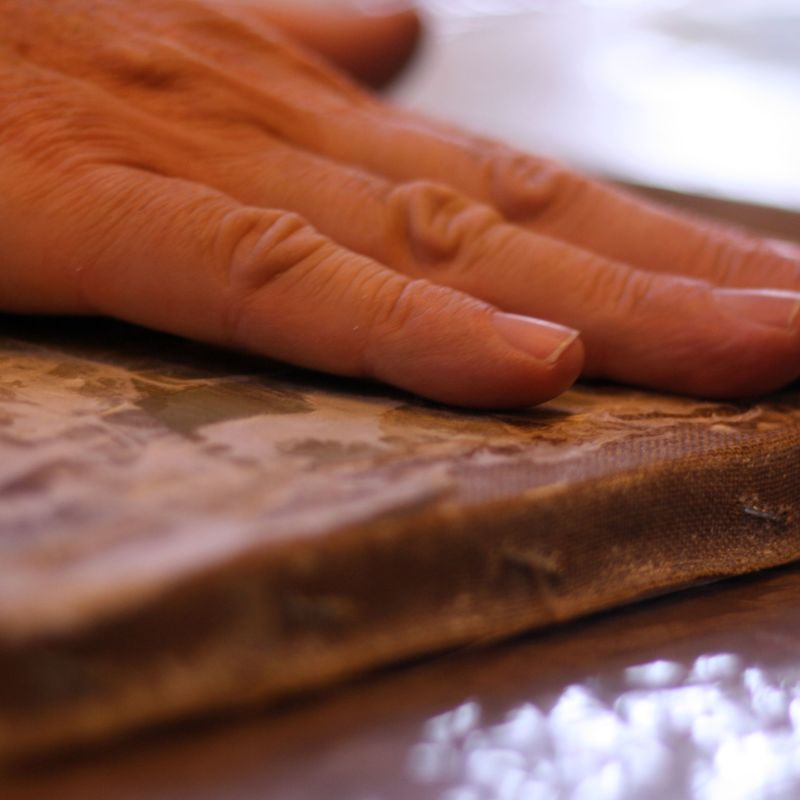

-

-

-

- 
-

-

A l’atelier vous trouvez une solution adaptée à l’état de conservation de votre œuvre à restaurer
Un vernis altéré, une toile distendue…. Et l’examen attentif va permettre de rechercher les moyens techniques les plus appropriés à mettre en œuvre : nettoyage – dévernissage – masticage – rentoilage puis remise en couleur…
Le tableau retrouve toute sa valeur.
Un vendredi tous les 15 jours de 9 h à 17 h
Les cours sont animés par une animatrice bénévole, spécialiste de la restauration de tableaux, qui transmet son savoir faire.
Auprès de l’association
Coût : 40 € par an — (Adhésion : 20 € et frais de location de salle : 20 €)
Reprise des cours le vendredi 3 octobre 2014